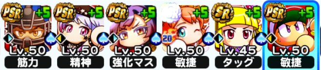
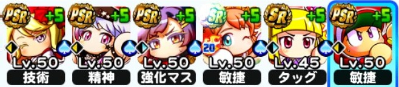

イベキャラ データ
[エアギター]志藤玲美 データ・イベントまとめ
読み：[えあぎたー]しどうれみ
[エアギター]志藤玲美の基本情報
| 得意練習 | メンタル(野手) / 打撃 |
|---|---|
| イベント前後 | 前 |
| 基礎上限 | ミート上限：2 走力上限：6 |
| 野手金特 | 至高の外野手＋ヒートアップ カリスマ＋ヒートアップ 大打撃 |
| 投手金特 | 完全制圧 |
| 友情特殊能力 | なし |
| 練習改革 | なし |
| アイテム追加枠 | なし |
[エアギター]志藤玲美の重要ボーナス
| コツイベントボーナス | 210% |
|---|---|
| 試合経験点ボーナス | 30%⇒35%(Lv50) |
| ミート上限アップ | 2 |
| 走力上限アップ | 6 |
その他ボーナスはこちらをタップ
| 初期評価 | 70(SR) 80(PSR) |
|---|---|
| 筋力ボーナス | 6 |
| 精神ボーナス | 6(固有) |
| スペシャルタッグ「メンタル」 | 12 |
| コツイベント率アップ | 20%(固有20%含む)⇒35%(SR37)⇒50%(Lv40) |
| 得意練習率アップ | 0%⇒15%(PSR42)⇒30%(Lv45) |
| スペシャルタッグボーナス | 100% |
| 練習効果アップ | 30% |
| コツレベルボーナス | 2 |
[エアギター]志藤玲美のイベント詳細
金特イベント 野球のリズム[複]
・1回目
| ＋ | その他 | |
|---|---|---|
| 楽器を練習しよう！ （イベント継続） | 技術+ 精神+ | |
| お母さんを説得しよう！ （イベント終了） | 体力- 志藤評価+5 技術+++ 精神+++ | 【野手】 大打撃 【投手】 キレ |
・2回目
※外野手育成時のみ選択肢出現
| ＋ | |
|---|---|
| 謝り倒すの？ （選択肢無し） | 志藤評価+5 筋力++ 精神++ |
| 歌を歌うの? （外野手育成時のみ・ 至高ルート） | 志藤評価+5 敏捷++ 技術++ |
・3回目＜2回目 謝り倒すの？ルート＞
| ＋ | その他 | |
|---|---|---|
| （成功） | 志藤評価+15 筋力+++ 敏捷(変化球)+++ 技術+++ 精神+++ | 【野手】 ヒー カリスマ 【投手】 完全制圧 |
| （失敗） | 志藤評価+5 筋力++ 敏捷(変化球)++ 技術++ 精神++ | 【野手】 ヒー カリスマ 【投手】 完全制圧 |
・3回目＜2回目 歌を歌うの？ルート＞
| ＋ | その他 | |
|---|---|---|
| （成功） | 志藤評価+15 筋力+++ 敏捷+++ 技術+++ 精神+++ | 【外野手】 ヒー 至高の外野手 |
| （失敗） | 志藤評価+5 筋力++ 敏捷++ 技術++ 精神++ | 【外野手】 ヒー 至高の外野手 |
共通イベント
・自己紹介
| ＋ |
|---|
志藤評価+5 技術+ |
・強く、可憐に、慎ましく
| ＋ | |
|---|---|
| 強く！ | 志藤評価+5 筋力++++ |
| 可憐に！ | 体力+ 技術++++ |
| 慎ましく！ | 志藤評価+5 精神++++ |
・ロックなコーディネート
| ＋ | その他 | |
|---|---|---|
| 悪くはないけど・・・ | 志藤評価+5 敏捷(変化球)++ 技術++ | 【野手】 インコー 身長打法になる 【投手】 内角〇 変化球中心になる |
| よく似合ってるよ | 体力最大値+4 志藤評価+5 敏捷(変化球)+ 精神+ | |
| もっと過激でもいいよ | 志藤評価+5 筋力++ 精神++ | 【野手】 かく乱 積極打法 【投手】 全開 速球中心になる |
[エアギター]志藤玲美の評価
【長所】
・至高の外野手を獲得可能。現在のアンドロメダ学園の外野手育成において必須クラスのキャラクターとなっている。
・Lv35とPSR50で試合経験点5％しか変わらないので、上限開放していなくても運用しやすい。
【短所】
・イベキャラ全体で見るとコツボナと試合経験点は圧倒的に高い訳ではない。また、肩力を上げるポジションでは精神ブースターは不要なのでやや汎用性に欠ける。
・基礎ボーナスが12しかないので、次期環境での活躍は厳しいかもしれない。
[エアギター]志藤玲美の使用デッキ例
アンドロメダ学園（外・メイン）

アンドロメダ学園（外・メイン）

[エアギター]志藤玲美の選手能力
| 選手ランク | B74 |
|---|---|
| メインポジション | 外 |
| サブポジション | なし |
| 利き腕 | 左投左打 |
野手能力
弾道2
ミートC69
パワーC62
走力B71
肩力D55
守備力B70
捕球D52
野手特殊能力
走塁○アベレージヒッター広角打法守備職人打球ノビ○
その他特殊能力
積極打法積極盗塁積極守備